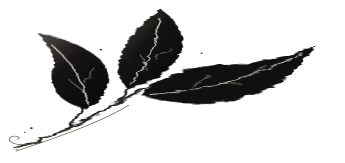
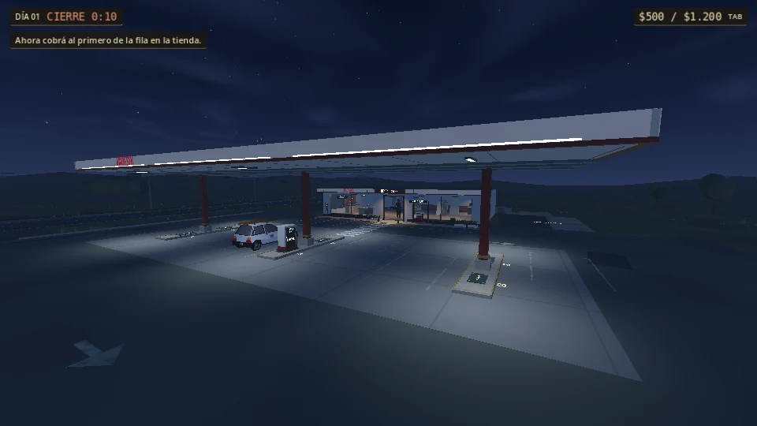

Andesol
Gestioná una estación de servicio argentina que cambia a lo largo del turno.


Un turno en la Ruta 7
La jornada empieza con un solo surtidor y una meta de facturación. El primer turno te guía por los dos trabajos de la estación.
- Atendé los autos en la playa y cobrá en la caja del minimercado. Los clientes pueden irse si esperan demasiado.
- Comprobá los ingresos y gastos en el ticket de cierre. Si alcanzás la meta, avanzás al siguiente día, con más demanda y clientes menos pacientes.
- Usá el saldo en el panel de la oficina para habilitar más surtidores. Cada compra aumenta la capacidad de la playa y queda registrada como gasto.
Tránsito, cobros y cierre
Los vehículos siguen rutas de entrada y salida para los surtidores habilitados. Las llegadas se espacian según la fase del turno y se frenan si la entrada está ocupada. Al cerrar deja de entrar gente y queda un margen para terminar las operaciones pendientes.
La caja y los surtidores comparten el mismo registro de ventas. El sistema distingue la facturación de los gastos, de modo que ampliar la playa reduce el saldo disponible sin bajar lo facturado en el día.
Los incidentes tienen condiciones propias y un gestor se encarga de que ocurran de a uno. Si se avería el generador, por ejemplo, la reparación aparece en el ticket del turno.

De la tarde a la noche
La iluminación sigue el reloj de la jornada. El cielo pasa por el ocaso, se encienden las luces de la marquesina y los carteles, y aparecen las estrellas. Al entrar al minimercado, el sonido ambiente cambia de forma gradual.
El exterior incluye la señalización del estacionamiento y un puesto de aire y agua. Junto con el frente vidriado del local y las luces de la playa, ayudan a distinguir las zonas de trabajo a medida que oscurece.

